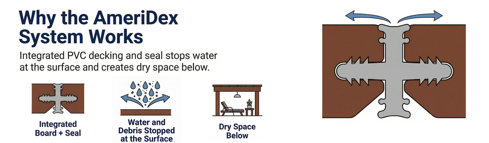

When people picture a deck failing, they picture rotten posts sinking into the ground or a railing pulling loose. In reality, most deck deterioration starts at the top, in the half-inch gaps between the deck boards, and works its way down into the structure. Understanding that path is the key to building a deck that lasts.
The gap that is supposed to help you
Almost every wood and composite deck is built with a small gap between boards, usually around an eighth to a quarter of an inch. That gap is intentional. It lets surface water drain off so the boards do not sit in standing water, and it gives the boards room to expand and contract with temperature. The trade-off is that every drop of rain that hits the deck runs straight through those gaps onto the framing below.
The wet-dry cycle that destroys framing
Here is the part most homeowners never see. Water falls through the gaps and lands on the tops of the joists, the beams, and the ledger board where the deck attaches to the house. That framing is shaded by the deck surface above it, so it dries slowly. Then the next storm wets it again before it has fully dried. Repeat that wet-dry cycle through a few hundred storms and you get three failures that take decks down from the inside.
Joist rot. Wood that stays damp feeds fungal decay. The tops of the joists, right where the water lands, are the first to go soft.
Fastener corrosion. Screws and nails sitting in repeatedly wet wood corrode faster, lose their grip, and let the boards work loose.
Ledger failure. The ledger board is the single most safety-critical connection on a deck. Water pooling behind it is a leading cause of the catastrophic collapses you read about.
Two ways to handle the water, only one fixes the deck
The common retrofit answer is a below-joist drainage system: a tray, panel, or membrane hung underneath the framing to catch water after it has fallen through. It keeps the patio below dry, but the water has already passed over and through the joists by the time the tray catches it. An above-joist system stops the water at the surface instead. Here is the difference that matters.
Below-joist tray
- Catches water after it falls through the gaps
- Framing still gets wet on every storm
- Wet-dry cycle keeps running
- Protects the space, not the deck
Above-joist seal
- Stops water at the deck surface
- Joists, beams, and ledger stay dry
- The rot cycle never starts
- Protects the deck and the space below
A below-joist tray protects the space. An above-joist seal protects the deck itself.
Stopping the water at the surface
The only way to break the cycle is to stop water at the deck surface, before it reaches the framing at all. That is what an above-joist drainage system does. With AmeriDex, every cellular PVC deck board locks onto a Dexerdry seal, an automotive-grade TPE gasket, as the deck is built. The seal closes the gap between the boards, so rain runs across the surface and sheds off the edge like water off a roof. The joists, beams, ledger, and fasteners never get wet, which means they never have to dry out, which means the cycle that rots decks from the top down never starts.

If you want the full mechanics of how the boards and seal work together, the above-joist deck drainage guide covers it in detail, and the above-joist vs below-joist comparison lays the two approaches side by side.
Because the seal has to go in between every board as the deck is built, AmeriDex is for new construction. If you are planning a build, that is the moment to design the water out of the structure. Request free samples and start a free quote to size the system for your project.